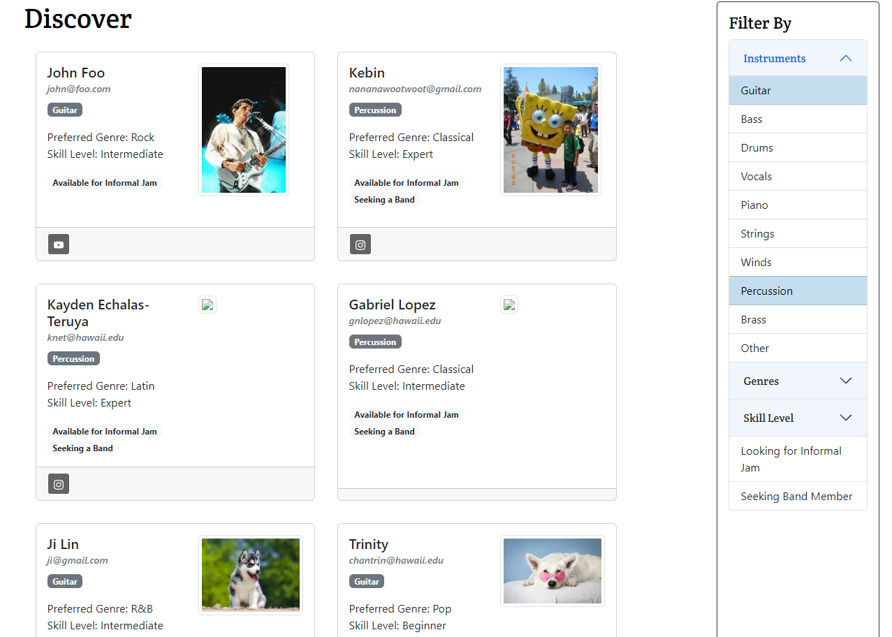

Mele Manoa is a web application designed to help connect musicians at the University of Hawaii. This application creates an easy way to find others with similar music tastes as yourself. Along with finding other people, you can also connect with groups or bands that share the same interests. This was the final project for my ICS314 class, and we worked in a group of 4 people.
In this project, we used GitHub to manage our code. Everyone was assigned their own assignments/tasks to do within the project. For myself, I was tasked with doing more fo the back-end type of things. The first task was just trying to create the collections that would store the users’ information. This was a fairly simple task but deciding what data would be in the collection was a little difficult at first. Since we had a login function for the user, we assumed that we could store the data in there, meaning no collection would be needed for the users. However, this was wrong and midway through the project we decided to change the users info to be stored inside a collection. I also created the group’s collection. That collection would store the information about all the different bands. They had data types that included genre, skill level, and the type of band they were.
The major task I had for this project was creating the filter function for the groups and members page. For example, if someone only wanted to see people that played guitars, then it would only show those profiles. To start, it was difficult for me to understand how to connect buttons to the users’ data. It took a lot of watching guides and reading the React documents, but after figuring it out, I was able to get the user function working. Using components such as ‘useState’ and ‘onClick’ are very useful when creating a filter. I felt that my understanding of Javascript inside Meteor/Reacts was not very solid before this project, but after this I can say that I have a better understanding of how connecting the two languages work.
This is the filter function for the ‘Discover’ page, we can that only profiles with the active filter are shown.

Here is the project homepage: https://mele-manoa.github.io/
Here is the organization page: https://github.com/mele-manoa